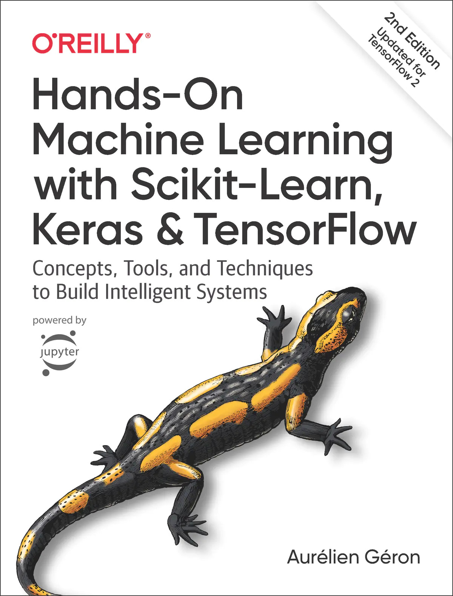

Sklearn 与 TensorFlow 机器学习实用指南第二版

懦夫才用磁带备份，真男人把重要的东西传到 FTP，然后世界会帮他备份。——林纳斯·托瓦兹
编译
npm install -g gitbook-cli # 安装 gitbook
gitbook fetch 3.2.3 # 安装 gitbook 子版本
gitbook install # 安装必要的插件
gitbook <build|pdf|epub|mobi> # 编译 HTML/PDF/EPUB/MOBI
下载
Docker
docker pull apachecn0/hands-on-ml-2e-zh
docker run -tid -p <port>:80 apachecn0/hands-on-ml-2e-zh
# 访问 http://localhost:{port} 查看文档
PYPI
pip install hands-on-ml-2e-zh
hands-on-ml-2e-zh <port>
# 访问 http://localhost:{port} 查看文档
NPM
npm install -g handson-ml-2e-zh
handson-ml-2e-zh <port>
# 访问 http://localhost:{port} 查看文档